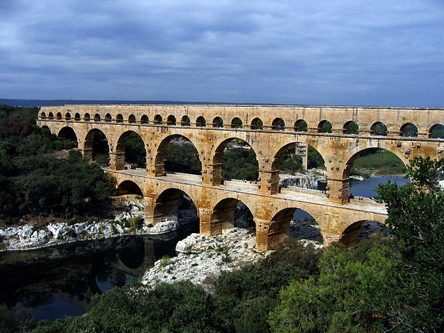

- O que você vai ver em Origem Romana?
- ■ Origem mitológica de roma
- ■ Origem históricas de roma
- ■ Fundação de roma
- O que você vai ver em Monarquia Romana?
- ■ Reis de roma
- ■ Papel militar e religioso
- ■ Implantação do Senado
- O que você vai ver em Império Romano?
- ■ Escravização dos povos conquistados
- ■ Extensão territorial
- ■ Invasões Germânicas
Dicionário
Glossário
Curiosidades
Arquitetura Romana
■ Centenas de milhares de pessoas morreram entre as paredes do Coliseu
Construído para sediar as famosas lutas de gladiadores romanos e entreter a população, o
Coliseu foi o placo de cerca de 500.000 mortes. Estima-se, ainda, que mais de 1 milhão de
animais morreram
dentro da gigante arena.

Os Aquedutos Romanos são construções enormes que transportavam água, permitindo que as pessoas se distanciassem da agricultura. Roma foi abastecida por 11 aquedutos ao final do terceiro século, com quase 800 km de cursos de água.
Com a ajuda dessas estruturas, as cidades não dependiam mais da agricultura de subsistência. Assim, o povo poderia concentrar esforços em arte, política, engenharia, artesanato e indústrias especializadas. Os Aquedutos, que usavam a gravidade para movimentar a água, foram feitos surpreendentes que permitiram o desenvolvimento do Antigo Império Romano. 